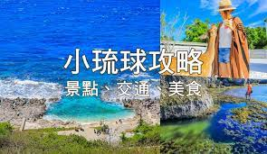

小琉球&高雄三天兩夜（9/28-9/30）
我們要做10點45的船，所以請前一天準備完行李，7:30分就要出發了，船不等人，請準時哦!!
上船後預計40分抵達小琉球，也就是11點25分左右~
第一天-台中→小琉球(早上行程)
先去找民宿配合的歐兜賣→再去寄放行李→西晒咖啡Ｘ海龜燒Seaside Cafe(吃小心點)→自由時間（看要環島還是休息也可以吃冰!!!）→潮間帶（要在與民宿老闆討論）、浮潛（潮間帶時間討論完才安排浮潛時間）
午餐推薦
1.琉球番壽司
冰品推薦
琉冰手作冰棒 10:00–21:00(5星好評)
小琉球冰箱冰舖 11:00–17:30, 19:00–21:00
第一天-台中→小琉球(晚上行程)
罪惡宵夜時間（宵夜美食）→民宿小酌打牌聊天
晚餐推薦
1.家興碳烤自助吧
2.龜龜燒烤(可以看烏龜吃燒烤)
3.小琉球燒肉王(室內燒肉吹冷氣，不確定會不會換烤網)
宵夜推薦
1.廟口鹹酥雞18:30–00:00
2.紐約客炸雞15:00–22:00
3.鮮鹽堂泰式鹽水雞17:00–23:00
4.小琉球飛魚卵起司烤餅15:00-22:00
5.古早味早午餐每日 07:00–11:00,17:00–23:00
6.筑安心串燒居酒屋18:00–22:00
7.小琉球·貳拾有陸Bar 19:00–01:00 （食物供應至 24:00）
PS:宵夜美食 推 小琉球·貳拾有陸Bar 19:00–01:00 （食物供應至 24:00） 招牌：黯然銷魂炸雞翅佐泰式醬、墨西哥玉米脆片佐自製莎莎
小琉球住宿（月掬民宿-0988-855-174）

請自己攜帶盥洗用具～～
二天一夜套裝內容
1.東港－小琉球來回船票
2.導覽地圖
3.月掬民宿住宿一晚
4.月掬特色風味早餐一天
5.月掬民宿室外戲水池
6.環島機車2人1台（含油資）
7.海邊潮間帶生態（導覽時間需由導覽員參考潮汐及天候等因素決定）
8.贈送一次浮潛（未滿5歲、懷孕、心臟及高血壓、海象不佳等退200元）
第二天-小琉球→高雄(早上行程)
早起吃早餐（可以吃古早味早午餐）→去烏鬼洞(鬼洞出來也有炸飛魚吃)、美人洞、山豬溝(這裡也可以吃炸飛魚)→吃午餐→麻花捲DIY(阿珠姨糖寶貝烘炸手工麻花捲→搭船回屏東(可以再去花瓶岩看看最後風景)
午餐推薦
1.達興餐廳吃蜂巢蝦創始店
2.福應平價海鮮熱炒吃海鮮，也有蜂巢蝦
第二天-小琉球→高雄(晚上行程)
開車到高雄住宿check in→愛河看風景→逛夜市（暫定六合夜市）-回民宿打屁聊天
高雄住宿（雲端精緻旅館-07-286-7069）

六合夜市就在雲端精緻旅館附近!!!